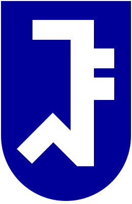
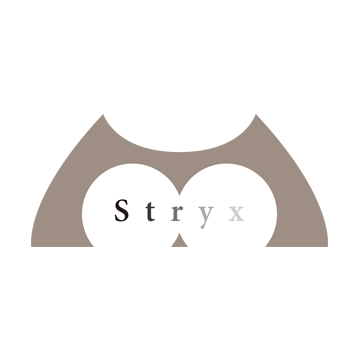
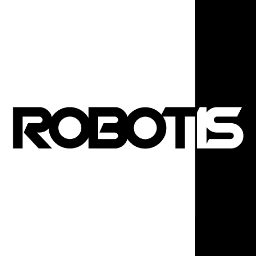

Haebeom Jung
Ph.D. Student
Graduate School in AI
Seoul National University
haebeom.jung [at] snu [dot] ac [dot] kr
Current Affiliations
- Robotics
- 3D reconstruction

I am an Integrated Ph.D. student in the Graduate School in AI at Seoul National University, advised by Jaesik Park in the SNU VGI Lab. I work at the intersection of robotics and 3D reconstruction, from LiDAR–camera calibration to neural rendering with 3D Gaussian Splatting. Before graduate school I was a robotics software engineer working on SLAM and autonomous navigation.
At Kakao Mobility (2021–2022) I built the data-collection software for the company's self-driving vehicles and worked on visual SLAM and localization, contributing to a registered patent on vector-map-based localization of moving objects. Before that, I fulfilled my military service as a lead engineer at Stryx (2019–2021), developing sensor-capture software for mobile mapping systems and an end-to-end autonomous driving stack for unmanned ground vehicles covering SLAM, localization, sensor fusion, and path planning. I also interned at ROBOTIS, where I verified the Open Manipulator before its open-source release.
I received my B.S. in Robotics from Kwangwoon University. As a three-year member and 2018 team leader of the humanoid division of RO:BIT, the university's robot game team, I developed vision and control algorithms for humanoid soccer and athletics and won awards at RoboCup and national competitions, which earned me a full scholarship.
I released TLC-Calib, the official code for our targetless LiDAR–camera calibration paper, maintain the ROS 2 wrapper for ORB-SLAM3, and have contributed to FAST-LIO and LIO-SAM on GitHub. I serve as a reviewer for NeurIPS, ECCV, CVPR, and IEEE TIP, and gave an invited talk at NAVER LABS in 2025. My work on targetless LiDAR–camera calibration is also the subject of a pending patent.
Latest news
All news →-
Rest2Art, our work on articulated object reconstruction, is accepted to ECCV 2026.
-
Selected as a Jeongheon Foundation Scholar for Ph.D. studies.
-
TLC-Calib will be presented at ICRA 2026.
-
Our paper on targetless LiDAR–camera calibration is accepted to IEEE RA-L.
Publications
All publications →-
ECCV 2026 European Conference on Computer Vision
Articulated Object Reconstruction from Rest-State Observation
@inproceedings{lee2026articulated, title = {Articulated Object Reconstruction from Rest-State Observation}, author = {Lee, Daeun and Lee, Jaeah and Kim, Woosung and Jung, Haebeom and Park, Jaesik}, booktitle = {European Conference on Computer Vision (ECCV)}, year = {2026} } -
RA-L 2026ICRA 2026 IEEE Robotics and Automation Letters, vol. 11, no. 4
Targetless LiDAR-Camera Calibration with Neural Gaussian Splatting
@article{jung2026targetless, title = {Targetless LiDAR-Camera Calibration with Neural Gaussian Splatting}, author = {Jung, Haebeom and Kim, Namtae and Kim, Jungwoo and Park, Jaesik}, journal = {IEEE Robotics and Automation Letters}, volume = {11}, number = {4}, pages = {4777--4784}, year = {2026}, doi = {10.1109/LRA.2026.3665066} } -
NeurIPS 2025 Advances in Neural Information Processing Systems, vol. 38
Metropolis-Hastings Sampling for 3D Gaussian Reconstruction
@inproceedings{kim2025metropolis, title = {Metropolis-Hastings Sampling for 3D Gaussian Reconstruction}, author = {Kim, Hyunjin and Jung, Haebeom and Park, Jaesik}, booktitle = {Advances in Neural Information Processing Systems (NeurIPS)}, volume = {38}, pages = {142862--142887}, year = {2025} }
Vitæ
Full CV →-

Seoul National University Sep. 2023 – PresentPh.D. Student in Artificial Intelligence
SNU Visual & Geometric Intelligence Lab · Advisor: Jaesik Park
-
Kakao Mobility Dec. 2021 – Apr. 2022
Software / Robotics Engineer
Self-driving data collection · visual SLAM and localization
-

Stryx Dec. 2019 – Dec. 2021Software / Robotics Engineer · compulsory military service
MMS sensor capture · UGV autonomous driving (SLAM, localization, sensor fusion, planning)
-

ROBOTIS Jan. 2019 – Feb. 2019Robotics Engineer
Open Manipulator verification and examples
-
KwangWoon University Mar. 2016 – Feb. 2023
B.S. in Division of Robotics
Full scholarship · RO:BIT humanoid team leader (2018)
Selected honors
All honors →-
Jeongheon Foundation Ph.D. Scholarship
-
SNU AI Fellowship (M.S. Program)